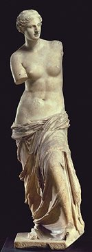

|

|
Session
on Numeric-Symbolic methods in Physical Modeling
Organized
by Ioannis Emiris, André
Galligo, Ilias S. Kotsireas
in the
frame of the conference
ACA'2002,
June 25-28, 2002, Volos, Greece
This session is intended to discuss,
without being limited to,
Research contributions as well as expository papers are solicited.
For more information and/or to present a paper at the session, please contact
the session organizers by e-mail.
List of talks:
- Adam V. Adamopoulos, Michael N. Vrahatis, Spiridon D. Likothanassis,
Democritus University of Thrace, University of Patras,
Prediction rules in chaotic binary data
- Laurent Busé, University of Nice, Solving polynomial systems with residual resultants
- Ioannis Emiris , INRIA Sophia-Antipolis, France, Implicitization of rational parametric hypersurfaces
- André Galligo , University of Nice, France,
Self intersections of bicubic surfaces
- Ilias S. Kotsireas , ORCCA-WLU, Ontario, Canada,
Efficient implicitization of curves, surfaces and hypersurfaces with applications to CAGD.
- G.C. Meletiou, T.E.I. of Epirus, Michael N. Vrahatis, University of Patras,
Handling Cryptographic problems through Interpolation,
Approximation and Neural Network Techniques
- Victor Pan , CUNY, New York:
Polynomial Root-Finding by Exploiting Matrix Structure and the Eigenvectors
- Jean Pascal Pavone, University of Nice, France:
Self-intersection of general parameterized surfaces
- Olivier Ruatta, INRIA Sophia-Antipolis:
Application of computer algebra techniques to
implicitization of rational surfaces with base points.
- Agnes Szántó, University of Kent, U.K. Solving over-determined systems by subresultant method
Papers presented at the session
will be considered for publication at a special issue of the Journal
of Symbolic Computation titled Applications of Computer Algebra. The
call
for papers is available. Check out the
ACA'2002 Important Dates.
|